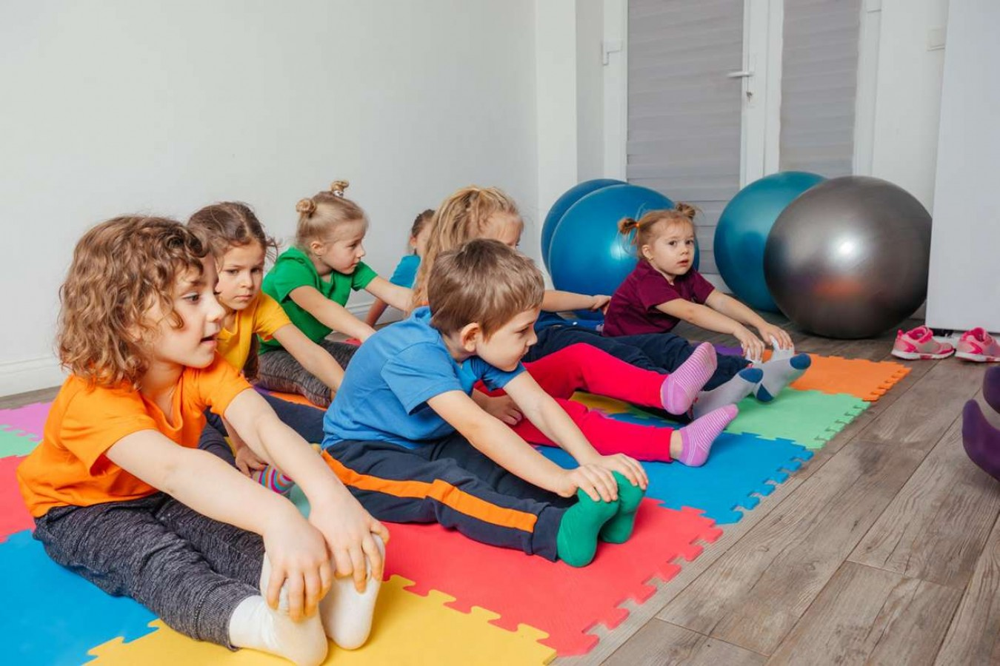

respect and treat others with kindness
Social-Emotional Learning is the ability to self-regulate and deal with ones emotions, respect and treat others with kindness, learn to cope with, and problem solve the daily issues that arise in life, as well as succeed later on and become civic-minded adults.

Children are taught different strategies, which enable them to identify their emotions, either verbally or by using signs or pictures. They are encouraged to express their feelings and use various coping skills to calm themselves.
At the 2017 Convention of the Council of Distinguished Scientists, it was stated that social-emotional competencies are crucial to the objectives of learning, positive development, and high achievement in school, work, as well as later in life (Evidence for Social & Emotional Learning in Schools, 2023).
These age-appropriate methods and skills help children recognize that it is okay to feel different emotions, even anger, but there are also safe, respectful, and responsible ways to deal with them.